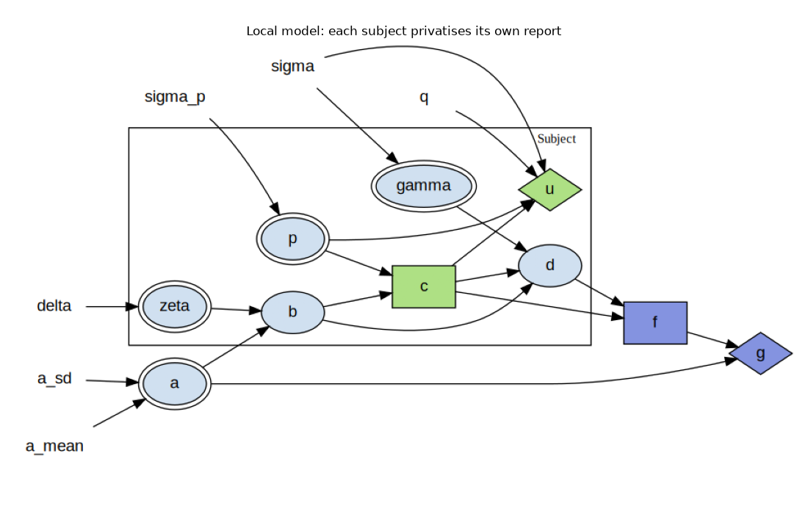
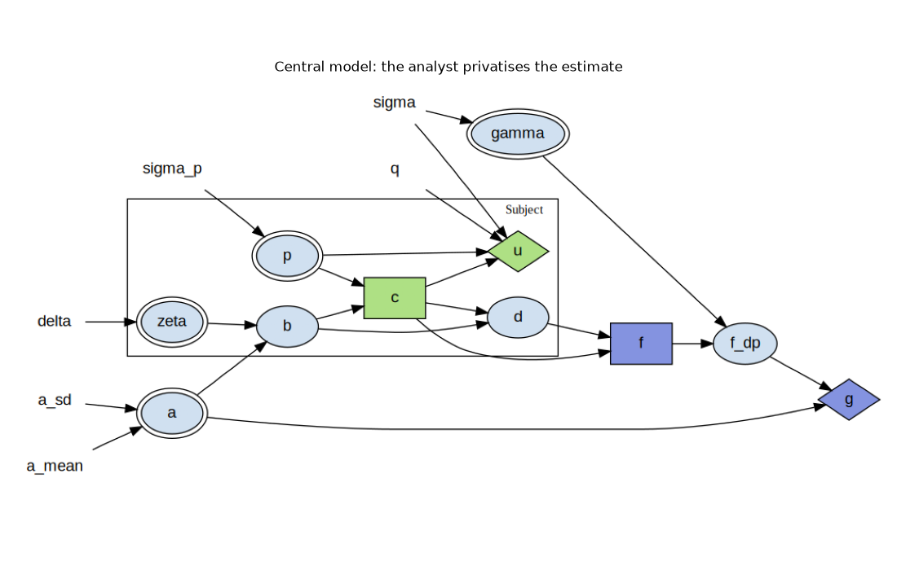
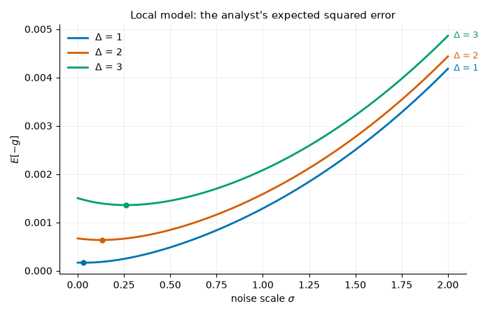
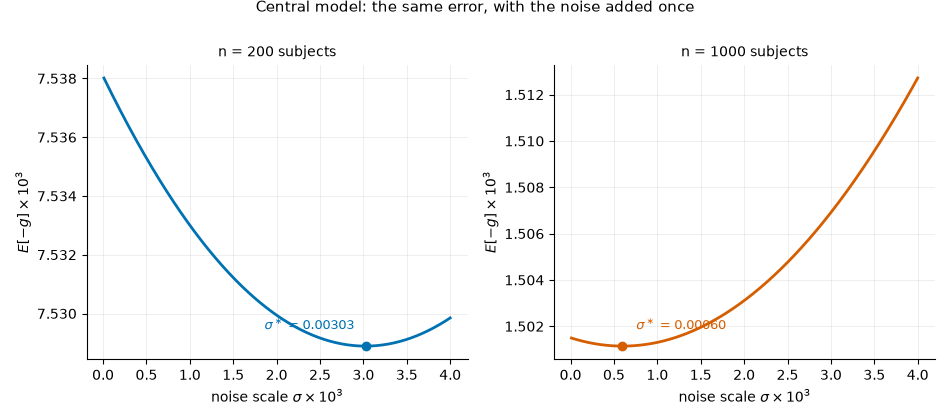
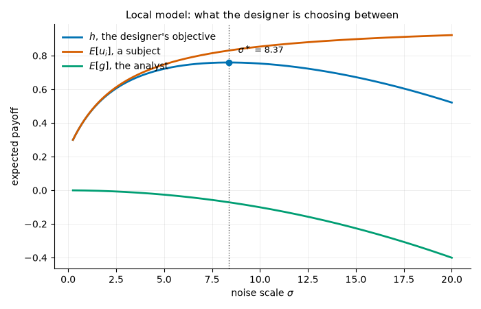

Note
Go to the end to download the full example code.
Differential Privacy: Tuning a Parameter With a Causal Game¶
A public-health analyst wants to know how common a stigmatised condition is. It can only find out by asking people, and people who answer pay a privacy cost for doing so. The analyst can promise differential privacy, which lowers that cost and brings more people in – but the noise the promise is made of is exactly what makes the answer less accurate.
So how much noise should the mechanism add? That is not a question anyone in the system can answer for themselves. The subjects respond to whatever noise scale they are offered, the analyst estimates from whatever reports arrive, and the noise scale is chosen by a designer above both, who has to weigh one party’s privacy against the other’s accuracy. This page tunes that parameter, following Benthall and Cummings (2026) [1].
What is on this page¶
the model, as a causal game with two agent roles,
the subjects’ decision, solved rather than assumed,
the analyst’s accuracy, against its closed form, in both trust models,
the designer’s sweep, which is the mechanism being designed.
The model¶
A population statistic \(a\) is what the analyst wants. Subject \(i\) holds \(b_i = a + \zeta_i\), its own value, and \(p_i\), how much it minds sharing. It decides \(c_i \in \{0, 1\}\):
Sharing is worth \(q\) and costs \(p_i/\sigma\), so a larger noise scale \(\sigma\) makes sharing cheaper. The analyst averages the reports it received; its payoff is the negative squared error of that estimate.
Where the noise goes is the difference between the two trust models, and it is the whole difference:
local: every subject privatises its own report, \(d_i = b_i + \gamma_i\) with one draw each. Nobody has to be trusted, and the noise is averaged down along with everything else.
central: subjects report \(d_i = b_i\) to an analyst they trust, which adds a single \(\gamma\) to the estimate it publishes. The noise is not averaged down, so it costs the same at any population size.
Both decisions have closed forms, which is what makes this model an oracle: a subject shares iff \(p_i < q\sigma\), and the analyst’s estimate is the empirical mean of the reports, which is the minimum-variance unbiased estimator of \(a\).
References¶
import matplotlib.pyplot as plt
import numpy as np
import skagent.models.privacy as privacy
from skagent.ground import GroundedBlock
from skagent.simulation.monte_carlo import Simulator
from skagent.solver import ExactBestResponse, project
from skagent.utils import plot_block_diagram
SUBJECTS = 1000
PLAYS = 400
# Colours chosen for colour-vision deficiency: blue, vermilion, bluish green.
SERIES = ["#0072B2", "#D55E00", "#009E73"]
def style(ax, xlabel, ylabel):
"""Recessive axes and grid, so the data is the only strong thing drawn."""
ax.set_xlabel(xlabel)
ax.set_ylabel(ylabel)
ax.grid(alpha=0.25, linewidth=0.6)
for side in ("top", "right"):
ax.spines[side].set_visible(False)
return ax
def play(block, calibration, rules, plays=PLAYS, seed=0):
"""Play *block* *plays* times over, and return every symbol's history."""
sim = Simulator(
calibration, block, rules, {}, sample_count=plays, T_sim=1, seed=seed
)
sim.initialize_sim()
return {sym: np.asarray(path) for sym, path in sim.simulate().items()}
The two games¶
Two agent roles over one model. The subjects are an entity class, so the
box in each diagram below is a thousand of them: each draws its own data
b and its own privacy concern p, each decides c, and each is paid
its own utility u. The analyst is drawn outside the box, because there
is one of it, and the edge that leaves the box is the reduction that turns a
thousand reports d into one estimate f.
First the local game, where each subject privatises its own report. The
noise gamma is drawn inside the box – one draw per subject – and it
enters the report, so what leaves the class is already private.
calibration = privacy.calibration(1.0, size=SUBJECTS)
plot_block_diagram(
privacy.local_block,
title="Local model: each subject privatises its own report",
calibration=calibration,
figsize=(11, 7),
)

Then the central game, where the subjects report their data as it is to an
analyst they trust. Two things move, and they are the only two: gamma is
now drawn outside the box, since one draw serves the whole population, and
it enters after the estimate rather than before it – the published estimate
f_dp is what accuracy is measured on.
plot_block_diagram(
privacy.central_block,
title="Central model: the analyst privatises the estimate",
calibration=calibration,
figsize=(11, 7),
)

What a subject decides, and what the library finds¶
The subject’s utility is linear in its decision, so the best response is at a
vertex: share whenever the benefit covers the concern, and never otherwise.
That is the paper’s threshold rule, and it means a continuous control on
[0, 1] is not an approximation of the binary decision here – a solver on
the relaxed control returns the exact rule.
So this is worth doing rather than assuming. The local population is projected onto one subject and the rest of its class, and an exact backup solves that subject’s decision. Nothing here turns on the trust model: the subject’s utility reads its own concern and the noise scale, and neither the reports nor the estimate enter it, so the same rule solves the central game.
SIGMA = 1.0
projected = project(
GroundedBlock(privacy.local_block, privacy.calibration(SIGMA, size=20))
)
concerns = np.linspace(-2.0, 2.0, 9)
method = ExactBestResponse(
projected,
{"p_actor": concerns, "b_actor": np.array([-1.0, 1.0])},
scope={
**projected.calibration,
"a": 0.0,
"zeta_actor": 0.0,
"zeta_other": 0.0,
"p_other": 0.0,
"gamma_actor": 0.0,
"gamma_other": 0.0,
},
)
solved = method.best_response(
"c_actor",
{"c_other": privacy.sharing_rule(SIGMA), "f": privacy.analyst_rule(0.0)},
)
print(f"{'privacy concern':>16} {'solved':>8} {'closed form':>12}")
for concern in concerns:
found = float(np.ravel(solved(0.0, concern))[0])
closed = float(privacy.sharing_rule(SIGMA)(0.0, concern))
print(f"{concern:16.2f} {found:8.2f} {closed:12.0f}")
privacy concern solved closed form
-2.00 1.00 1
-1.50 1.00 1
-1.00 1.00 1
-0.50 1.00 1
0.00 1.00 1
0.50 1.00 1
1.00 0.50 0
1.50 0.00 0
2.00 0.00 0
The two agree everywhere except at \(p_i = q\sigma\), where the benefit exactly covers the concern. There the subject is indifferent – every action is optimal – and the closed form breaks the tie towards not sharing while the solver does not break it at all.
The solved rule is also flat in b, the subject’s own data, which it
observes and could act on. That it does not is what makes the sharing decision
leak nothing about what is being measured, and it is the assumption the whole
estimator rests on. The last section takes it away.
solved rule at two values of the subject's own data: 1.00 1.00
And the population plays it as declared: the fraction who share is the concern distribution evaluated at the benefit of sharing, and the estimate that comes out is unbiased.
spread = privacy.calibration(SIGMA, size=SUBJECTS, delta=3.0)
history = play(
privacy.local_block,
spread,
{"c": privacy.sharing_rule(SIGMA), "f": privacy.analyst_rule(0.0)},
)
print(
f"shared: {history['c'].mean():.3f} simulated"
f" {privacy.share_probability(SIGMA):.3f} closed form"
)
print(f"estimate: {history['f'].mean() - history['a'].mean():+.4f} bias")
shared: 0.841 simulated 0.841 closed form
estimate: -0.0013 bias
What the analyst gets: the local model¶
The error of the estimate is a variance divided by the number of reports, and both of those move with \(\sigma\). More noise means a noisier report and more reports. Locally the first effect wins almost immediately, so accuracy falls in the noise scale – but not from zero, and that is the paper’s first result: an accuracy-maximising designer asks for some noise, because the subjects it brings in are worth more than the noise costs.
noise = np.linspace(1e-4, 2.0, 200)
fig, ax = plt.subplots(figsize=(7, 4.5))
for colour, spread in zip(SERIES, (1.0, 2.0, 3.0)):
error = [privacy.local_error(s, size=SUBJECTS, delta=spread) for s in noise]
ax.plot(noise, error, color=colour, linewidth=2, label=rf"$\Delta$ = {spread:.0f}")
ax.annotate(
rf"$\Delta$ = {spread:.0f}",
(noise[-1], error[-1]),
xytext=(6, 0),
textcoords="offset points",
color=colour,
va="center",
fontsize=9,
)
best = noise[int(np.argmin(error))]
ax.plot([best], [min(error)], marker="o", markersize=5, color=colour)
ax.set_title("Local model: the analyst's expected squared error", fontsize=11)
ax.legend(frameon=False, loc="upper left")
style(ax, r"noise scale $\sigma$", r"$E[-g]$")
fig.tight_layout()
for spread in (1.0, 2.0, 3.0):
error = [privacy.local_error(s, size=SUBJECTS, delta=spread) for s in noise]
print(f"delta = {spread:.0f}: best noise scale {noise[int(np.argmin(error))]:.3f}")

delta = 1: best noise scale 0.030
delta = 2: best noise scale 0.131
delta = 3: best noise scale 0.261
The dot on each curve is that interior optimum. It moves right as the data spread \(\Delta\) grows: the wider the variation being estimated, the more an extra report is worth and the more noise is worth paying for it.
The central model, where the noise is not averaged down¶
Centrally the analyst is trusted with the raw data and adds one draw of noise to the estimate. That noise is not divided by anything, so it enters the error as \(\sigma^2\) whatever the population size – and the optimum is therefore three orders of magnitude smaller than the local one.
noise = np.linspace(1e-5, 4e-3, 300)
# One panel per population rather than one axis for both: the two errors differ
# in level by more than either varies over the whole range of sigma, so drawn
# together each curve reads as flat and the optimum this figure is about
# disappears.
fig, axes = plt.subplots(1, 2, figsize=(9.5, 4.2), sharex=True)
for ax, colour, size in zip(axes, SERIES, (200, 1000)):
error = np.array([privacy.central_error(s, size=size, delta=3.0) for s in noise])
best = noise[int(np.argmin(error))]
ax.plot(noise * 1e3, error * 1e3, color=colour, linewidth=2)
ax.plot([best * 1e3], [error.min() * 1e3], "o", markersize=6, color=colour)
outer = best > noise.mean()
ax.annotate(
rf"$\sigma^\ast$ = {best:.5f}",
(best * 1e3, error.min() * 1e3),
xytext=(-8 if outer else 10, 12),
textcoords="offset points",
ha="right" if outer else "left",
fontsize=9,
color=colour,
)
ax.set_title(f"n = {size} subjects", fontsize=10)
style(ax, r"noise scale $\sigma \times 10^{3}$", r"$E[-g] \times 10^{3}$")
fig.suptitle(
"Central model: the same error, with the noise added once", fontsize=11, y=1.0
)
fig.tight_layout()
for size in (200, 1000):
error = [privacy.central_error(s, size=size, delta=3.0) for s in noise]
print(f"n = {size:5d}: best noise scale {noise[int(np.argmin(error))]:.5f}")

n = 200: best noise scale 0.00303
n = 1000: best noise scale 0.00060
The two curves say something the local model cannot: how many subjects there are changes the answer. Locally, the mechanism’s noise and the variation being estimated are both divided by the number of reports, so the trade between them is the same in a small population as in a large one. Centrally only the variation is divided, so a larger population has less to gain from buying participation and the designer asks for less noise.
The designer’s problem¶
Accuracy is not the only thing at stake: the subjects have preferences over the same parameter, and they want it larger. A designer that weighs both maximises an objective of its own,
under a bounded subject utility – \(u_i = c_i(1 - e^{p_i}/(1 + \sigma))\), the paper’s own example, where the privacy cost is lognormal and more noise always helps. The accuracy term is the local model’s, as in the paper, so this is the local architecture throughout. The two terms pull in opposite directions, so the maximum is interior: neither no privacy nor unlimited noise.
noise = np.linspace(0.25, 20.0, 400)
objective = np.array([privacy.designer_objective(s, size=SUBJECTS) for s in noise])
welfare = np.array([privacy.bounded_subject_utility(s) for s in noise])
accuracy = objective - welfare
best = noise[int(np.argmax(objective))]
fig, ax = plt.subplots(figsize=(7, 4.5))
for colour, values, label in zip(
SERIES,
(objective, welfare, accuracy),
("$h$, the designer's objective", "$E[u_i]$, a subject", "$E[g]$, the analyst"),
):
ax.plot(noise, values, color=colour, linewidth=2, label=label)
ax.axvline(best, color="#555555", linewidth=1, linestyle=":")
# The dot is on `h` rather than on either term it is made of: what the designer
# maximizes is the sum, and the peak is flat enough that the eye needs telling
# where it is.
ax.plot([best], [objective.max()], "o", markersize=6, color=SERIES[0])
ax.annotate(
rf"$\sigma^\ast$ = {best:.2f}",
(best, objective.max()),
xytext=(10, 10),
textcoords="offset points",
fontsize=9,
)
ax.set_title("Local model: what the designer is choosing between", fontsize=11)
ax.legend(frameon=False, loc="upper left")
style(ax, r"noise scale $\sigma$", "expected payoff")
fig.tight_layout()
print(f"designer's choice: sigma = {best:.2f}")
print(f" privacy guarantee: epsilon = {privacy.privacy_epsilon(best):.3f}")
print(f" subjects sharing: {privacy.bounded_share_probability(best):.3f}")

designer's choice: sigma = 8.37
privacy guarantee: epsilon = 0.579
subjects sharing: 0.987
That number is the point of the exercise: it is a noise scale chosen from the purposes of the system, and it implies a privacy parameter rather than being handed one. The differential-privacy literature usually treats \(\epsilon\) as a knob to be set by convention; here it comes out of the trade the designer has actually made.
The choice is not robust to the population size, and it should not be – the designer’s problem genuinely depends on it:
subjects best sigma epsilon
100 3.12 1.552
250 4.75 1.019
1000 8.37 0.579
5000 15.20 0.319
What was supplied and what was found¶
The subjects’ rule was found: an exact backup on the projected block returns the paper’s threshold, and its flatness in the subject’s own data is a result rather than an assumption.
The analyst’s rule was supplied, because its information set is the whole subject class and a rule over a class needs a permutation-invariant policy that this library does not yet have. The paper supplies it in closed form, and proves it optimal, so nothing is being approximated here – but it is worth knowing which of the two rules on this page the library produced.
The designer’s sweep is a loop over equilibria written here rather than in the library: it is neither a solution concept nor a method, and one instance of it is not yet an interface.
plt.show()
Total running time of the script: (0 minutes 1.427 seconds)